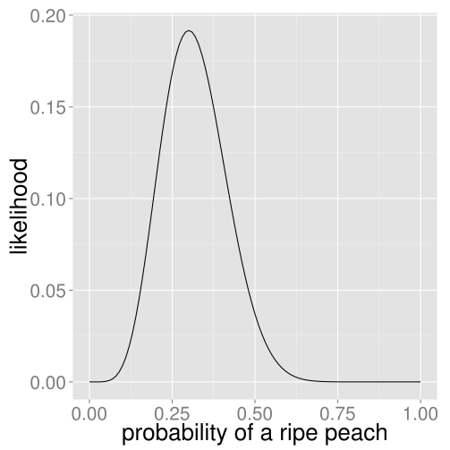
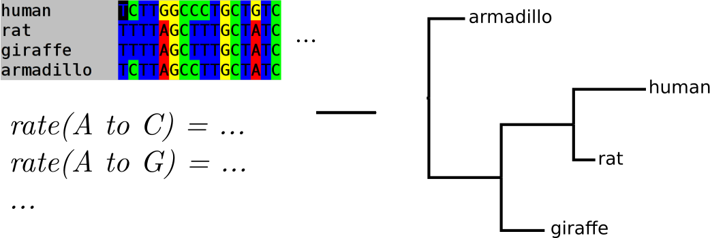
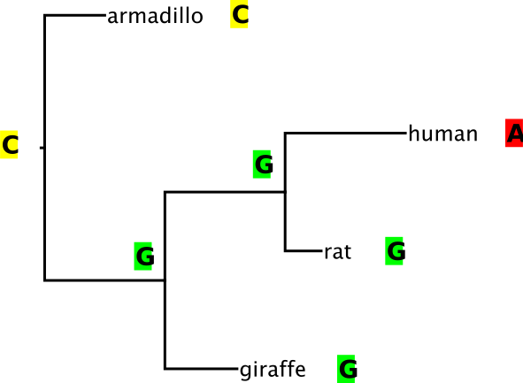
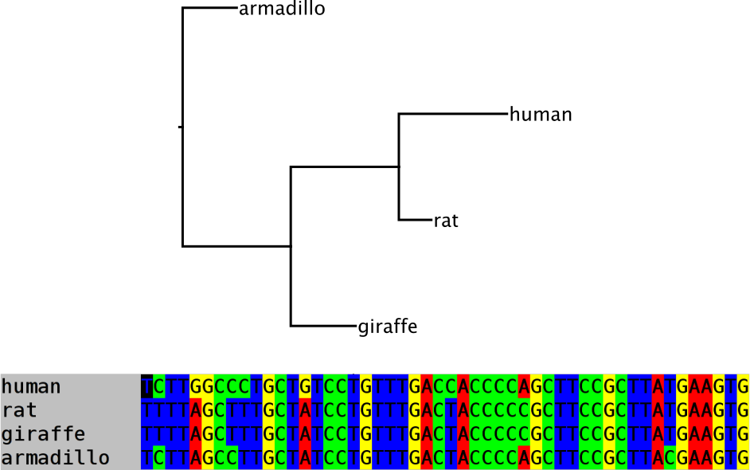

Phylogenetics methods: likelihood
Erick Matsen
Likelihood setup
- Come up with a statistical model of experiment
- Parametrize that model
- Evaluate likelihood under various parameter values
Example: picking peaches
Say that, after harvesting 20 peaches, we have 6 ripe ones.
Model using the binomial distribution. Say \(p\) is the probability of getting a ripe peach, and each draw is independent.
The likelihood of getting the observed result is \[
{ {20} \choose 6} \, p^6 \, (1-p)^{20-6}.
\] Recall: \({ {20} \choose 6}\) is the number of ways of choosing 6 items out of 20.
Peach picking likelihood surface

The maximum likelihood estimate of the parameter(s) of interest is the parameter value(s) that maximize the likelihood.
Questions
-
What is the maximum likelihood (ML) estimate of \(p\) given our experiment?
-
Would the result of this ML estimate be different if we got 60 ripe peaches out of 200?
-
Intuitively, would the shape of the likelihood curve be different with this larger dataset?
Likelihood recap
- Maximum likelihood is a way of inferring unknown parameters
- To apply likelihood, we need a model of the system under investigation
- In general, the “likelihood” is the likelihood of generating the data under the given parameters, written \(P(D | \theta),\) where \(D\) is the data and \(\theta\) are the parameters.
Setup for likelihood based phylogenetics
The phylogenetic likelihood of a tree is the likelihood of generating the observed data given that tree (under the sequence evolution model).

Note that the UW’s own Joe Felsenstein was the first to formalize this and develop efficient algorithms.
Sequence evolution models describe the rate of substitution from one symbol to another
\[
Q={\begin{pmatrix}-\mu _{A}&\mu _{AG}&\mu _{AC}&\mu _{AT}\\\mu _{GA}&-\mu _{G}&\mu _{GC}&\mu _{GT}\\\mu _{CA}&\mu _{CG}&-\mu _{C}&\mu _{CT}\\\mu _{TA}&\mu _{TG}&\mu _{TC}&-\mu _{T}\end{pmatrix}}
\]
\[
Q_{\text{HKY}}={\begin{pmatrix}{*}&{\kappa \pi _{G}}&{\pi _{C}}&{\pi _{T}}\\{\kappa \pi _{A}}&{*}&{\pi _{C}}&{\pi _{T}}\\{\pi _{A}}&{\pi _{G}}&{*}&{\kappa \pi _{T}}\\{\pi _{A}}&{\pi _{G}}&{\kappa \pi _{C}}&{*}\end{pmatrix}}
\]
Different models for different data
- Nucleotide models are fit “on the fly”
- Protein models are typically pre-made
- e.g. JTT (Jones, Taylor, and Thornton), and WAG (Whelan and Goldman) matrices
- Codon models are a great idea
- Position matters!
- e.g. SRD06 model
Calculating likelihood of a single column

Likelihood of an alignment

Likelihood phylogenetics recap
- In likelihood phylogenetics, explicitly model mutation process
- This allows “complex” models to be used
- Statistical basis allows us to make formal statements about uncertainty
- But on the other hand our models are over-simple!
Crazy but typical model assumptions
- differences between sequences only appear by point mutation
- evolution happens on each column independently
- sequences are evolving according to reversible models (this excludes selection and directional evolution of base composition)
- the evolutionary process is identical on all branches of the tree